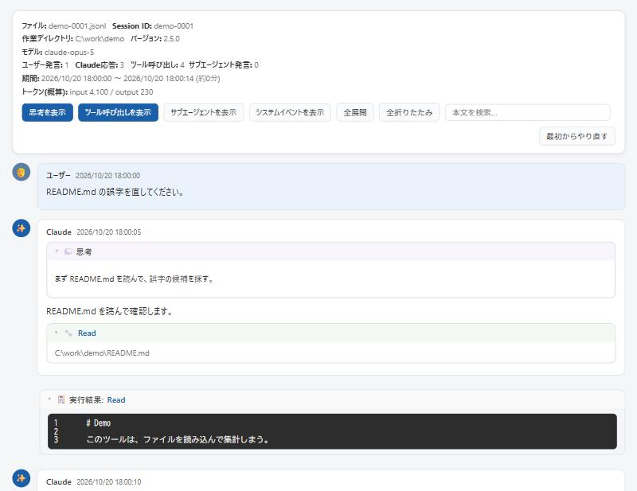

Claude Code keeps every session in %USERPROFILE%\.claude\projects\<project>\<session-id>.jsonl, one JSON record per line.
This viewer reads that file and lays out messages, thinking, tool calls and their results separately.
The interface is in Japanese.
Download claude-session-viewer.html sample-session.jsonl to try

Usage
- Open the downloaded HTML in Chrome or Edge.
- Drop a
.jsonlfile, or click the box to choose one. - You can also pick a whole folder. Choose
%USERPROFILE%\.claude\projects\<project>with the first folder button (ログのフォルダを開く) to list its sessions, newest first. Filter them by title, first message or working folder.
What it shows
- The top panel shows the file name, session ID, working folder, model, number of messages and tool calls, duration and a rough token count.
- Buttons toggle thinking, tool calls, subagents and system events.
- Tool calls are shown by type: the command for Bash, before and after for Edit, the file name for Read.
- Search marks every match and opens the collapsed blocks that contain one.
The token count adds input (including cache creation) and output. Cache reads are not counted, so it will not match your bill.
What leaves your computer
Nothing. The file is read inside the browser and never sent anywhere. Session logs can contain API keys and file contents, so take care when you show the screen to others.
Released under The Unlicense. Use, change and share it freely. It comes with no warranty, and I am not liable for any damage caused by its use.